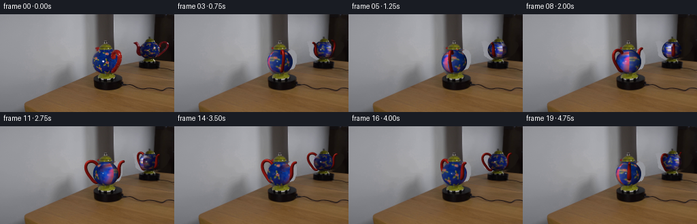
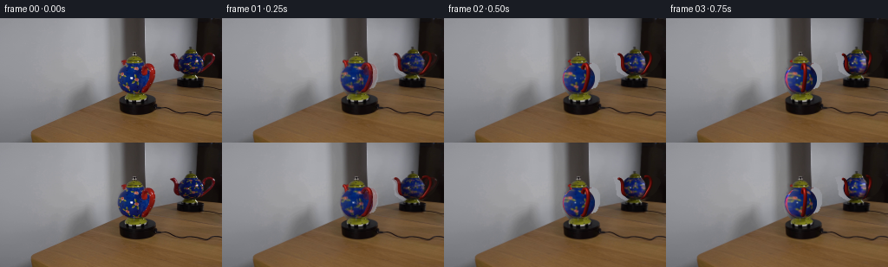
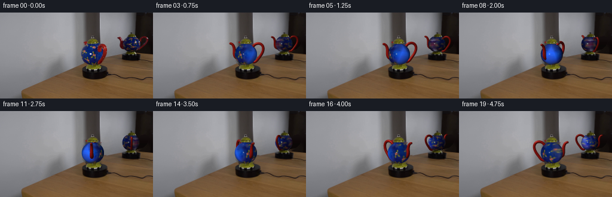
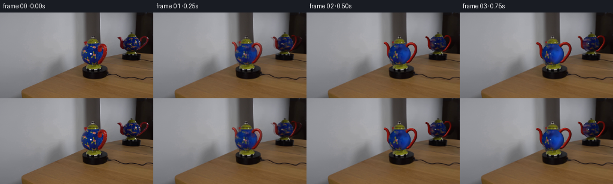
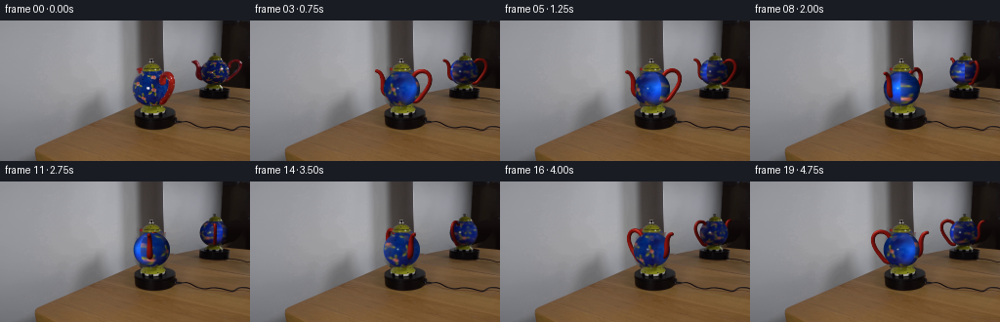
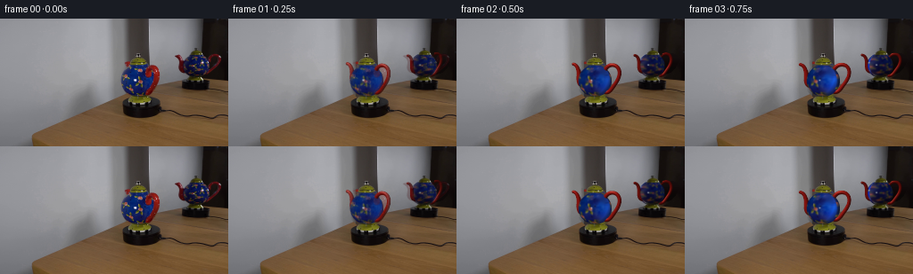
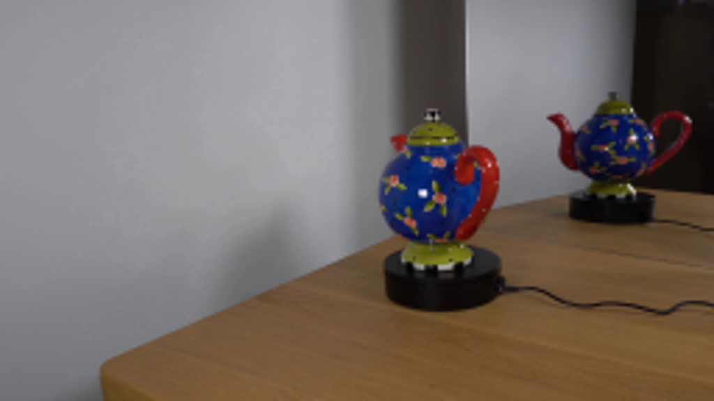
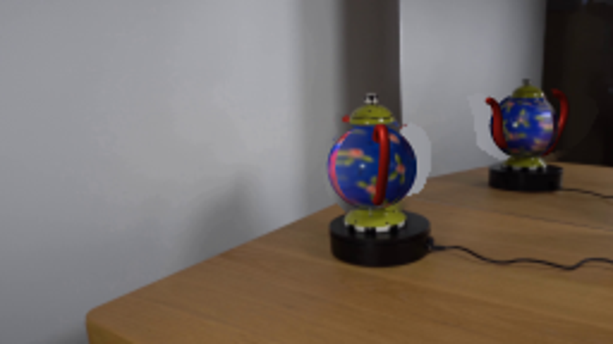
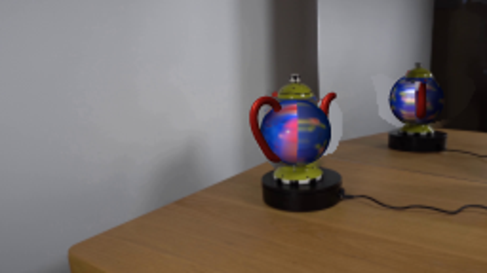
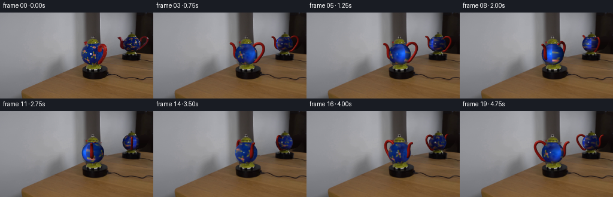

CODING AGENTS AS PIXEL WORLD MODELS
traex/GPT-6.1-Sol · 0121
点击播放 · 原生 RGB 像素
逐轮保存的候选
回放视频、检查图与代码变化。
每份候选均可单独播放。实际图片检查记录在下方工具轨迹中。
候选 01播放与检查图
点击播放 · 原生 RGB 像素


展开代码变化
--- 上一保存版本
+++ 本次保存版本
@@ -0,0 +1,159 @@
+from pathlib import Path
+import numpy as np
+import cv2
+from PIL import Image, ImageDraw
+from scipy.ndimage import map_coordinates, gaussian_filter
+from scipy.interpolate import CubicSpline
+import artifact_io
+
+ROOT=Path(__file__).parent
+S=4
+W,H=256*S,144*S
+source=np.array(Image.open(ROOT/'first_frame.png').convert('RGB'))
+
+# Remove the two moving silhouettes, keeping their fixed bases, lids and the room.
+mask=np.zeros((144,256),np.uint8)
+mainpoly=np.array([(140,47),(146,50),(161,51),(167,54),(171,51),(176,54),(179,59),(179,70),(176,78),(170,86),(163,89),(145,89),(137,81),(134,71),(137,60),(141,57)],np.int32)
+refpoly=np.array([(195,40),(200,39),(207,42),(213,39),(224,39),(232,43),(236,40),(242,39),(248,42),(249,47),(244,56),(236,64),(226,68),(213,68),(204,64),(199,60),(198,49)],np.int32)
+cv2.fillPoly(mask,[mainpoly,refpoly],255)
+bg=cv2.inpaint(source,mask,5,cv2.INPAINT_TELEA)
+# Continue the wall's stationary vertical divisions through the occluded regions.
+for y in range(39,91):
+ for x in range(132,182):
+ if mask[y,x] and y < 132.5-.30*x:
+ # Nearby unobstructed wall rows supply the exact column-dependent color.
+ bg[y,x]=np.clip(source[30:38,x].mean(axis=0)+(y-34)*np.array([-.13,-.12,-.11]),0,255)
+for y in range(39,69):
+ for x in range(194,251):
+ if mask[y,x] and y < 132.5-.30*x:
+ bg[y,x]=np.clip(source[24:31,x].mean(axis=0)+(y-28)*np.array([-.04,-.04,-.04]),0,255)
+bghi=cv2.resize(bg,(W,H),interpolation=cv2.INTER_CUBIC).astype(float)
+
+# The painted body is used as a surface texture, rather than as a moving cutout.
+def prepare_texture(cx,cy,rx,ry,reflection=False):
+ tex=source.copy()
+ yy,xx=np.indices((144,256))
+ inside=((xx-cx)/rx)**2+((yy-cy)/ry)**2<1
+ red=(tex[:,:,0]>tex[:,:,2]*1.3)&(tex[:,:,0]>tex[:,:,1]*1.5)&(xx>cx+3)&inside
+ white=(np.min(tex,axis=2)>105)&(np.max(tex,axis=2)-np.min(tex,axis=2)<65)&inside
+ bad=((red|white).astype(np.uint8)*255)
+ tex=cv2.inpaint(tex,bad,3,cv2.INPAINT_TELEA)
+ # Edge patches must remain blue even at angles not visible in the initial image.
+ blue=(tex[:,:,2]>tex[:,:,0]*1.25)&(tex[:,:,2]>tex[:,:,1]*1.12)
+ fillmask=(inside&(~blue)&(((xx-cx)/rx)**2+((yy-cy)/ry)**2>.83)&(yy<cy-7)).astype(np.uint8)*255
+ tex=cv2.inpaint(tex,fillmask,2,cv2.INPAINT_TELEA)
+ return tex.astype(float)
+
+configs=[dict(cx=155.4,cy=70.0,rx=18.7,ry=17.9,phi=.78,hoff=0.,texture=prepare_texture(155.4,70.,18.7,17.9),reflect=False),dict(cx=219.1,cy=52.7,rx=14.5,ry=14.0,phi=-.13,hoff=2.0,texture=prepare_texture(219.1,52.7,14.5,14.0,True),reflect=True)]
+
+handle=np.array([[.63,.65],[.85,.94],[1.13,1.03],[1.40,.95],[1.55,.74],[1.57,.43],[1.43,.05],[1.16,-.35],[.78,-.70],[.67,-.70]])
+spout=np.array([[-.68,-.30],[-.95,-.18],[-1.02,.04],[-1.04,.37],[-1.09,.66],[-1.22,.90],[-1.40,.99]])
+
+def samplecurve(points,num):
+ u=np.r_[0,np.cumsum(np.linalg.norm(np.diff(points,axis=0),axis=1))]
+ return CubicSpline(u,points,axis=0)(np.linspace(0,u[-1],num))
+handle=samplecurve(handle,110)
+spout=samplecurve(spout,60)
+
+# Fine, analytically shaded round tubes, depth-tested against the vessel.
+def tube(img,depth,points,radii,angle,c,kind):
+ ca,sa=np.cos(angle),np.sin(angle)
+ elev=.105
+ p=np.zeros((len(points),3))
+ p[:,0]=c['cx']+c['rx']*points[:,0]*ca
+ p[:,1]=c['cy']-c['ry']*points[:,1]+c['ry']*elev*points[:,0]*sa+c['hoff']
+ p[:,2]=points[:,0]*sa+elev*points[:,1]
+ for k in range(len(p)-1):
+ a,b=p[k],p[k+1]
+ rad=float((radii[k]+radii[k+1])/2*c['rx'])
+ xlo=max(0,int((min(a[0],b[0])-rad-1)*S)); xhi=min(W,int((max(a[0],b[0])+rad+1)*S)+1)
+ ylo=max(0,int((min(a[1],b[1])-rad-1)*S)); yhi=min(H,int((max(a[1],b[1])+rad+1)*S)+1)
+ if xlo>=xhi or ylo>=yhi: continue
+ Y,X=np.mgrid[ylo:yhi,xlo:xhi].astype(float); X=(X+.5)/S; Y=(Y+.5)/S
+ dx=b[0]-a[0]; dy=b[1]-a[1]
+ t=np.clip(((X-a[0])*dx+(Y-a[1])*dy)/(dx*dx+dy*dy+1e-8),0,1)
+ qx=a[0]+t*dx; qy=a[1]+t*dy
+ nx=(X-qx)/rad; ny=-(Y-qy)/rad
+ nz=np.sqrt(np.maximum(0,1-nx*nx-ny*ny))
+ z=a[2]+t*(b[2]-a[2])+rad/c['rx']*nz
+ valid=(nx*nx+ny*ny<=1)&(z>depth[ylo:yhi,xlo:xhi])
+ shade=.30+.70*np.maximum(0,-.48*nx+.50*ny+.72*nz)
+ spec=np.maximum(0,-.32*nx+.47*ny+.82*nz)**27
+ color=np.array([145.,21.,16.]) if not c['reflect'] else np.array([117.,17.,13.])
+ col=shade[:,:,None]*color+spec[:,:,None]*np.array([99,72,59])
+ # Subtle warm ceramic glaze mottling.
+ mott=1+.035*np.sin(X*4.7+Y*3.6+ k*.21)
+ col*=mott[:,:,None]
+ if kind=='spout' and k>len(p)-5:
+ col*=.92
+ sub=img[ylo:yhi,xlo:xhi]; sub[valid]=col[valid]
+ dep=depth[ylo:yhi,xlo:xhi]; dep[valid]=z[valid]
+
+def body(img,depth,theta,c):
+ cx,cy,rx,ry=c['cx'],c['cy'],c['rx'],c['ry']
+ xlo=int((cx-rx-1)*S);xhi=int((cx+rx+1)*S)
+ ylo=int((cy-ry-1)*S);yhi=int((cy+ry+1)*S)
+ Y,X=np.mgrid[ylo:yhi,xlo:xhi].astype(float); X=(X+.5)/S;Y=(Y+.5)/S
+ x=(X-cx)/rx; y=(cy-Y)/ry
+ # Slightly flattened neck and narrowed lower heel are characteristic of this pot.
+ valid=(x*x+y*y<=1)&(y<.955)&(y>-.965)
+ z=np.sqrt(np.maximum(0,1-x*x-y*y))
+ ca,sa=np.cos(theta),np.sin(theta)
+ x0=x*ca-z*sa; z0=x*sa+z*ca
+ # The unseen hemisphere continues the photographed painted decoration.
+ xx=cx+rx*x0
+ yy=cy-ry*y
+ behind=z0<0
+ xx=np.where(behind,cx-rx*x0*.96,xx)
+ yy=np.where(behind,cy-ry*np.clip(y*.95+.045,-.95,.95),yy)
+ # Stay just inside the curved boundary to avoid pulling the room into the glaze.
+ lim=np.sqrt(np.maximum(.005,1-y*y))*.96
+ xx=np.clip(xx,cx-rx*lim,cx+rx*lim)
+ coords=np.array([yy,xx])
+ tex=c['texture']
+ col=np.stack([map_coordinates(tex[:,:,i],coords,order=1,mode='nearest') for i in range(3)],axis=-1)
+ old=.38+.62*np.maximum(0,-.29*((xx-cx)/rx)+.35*y+.89*np.abs(z0))
+ new=.38+.62*np.maximum(0,-.29*x+.35*y+.89*z)
+ col=np.clip(col*(new/(old+1e-6))[:,:,None],0,255)
+ # A stationary small specular reflection from the room light.
+ highlight=np.exp(-((X-(cx-4.0))/.95)**2-((Y-(cy-.5))/.82)**2)
+ col=col*(1-.77*highlight[:,:,None])+np.array([211,219,214])*.77*highlight[:,:,None]
+ valid&=(z>depth[ylo:yhi,xlo:xhi])
+ img[ylo:yhi,xlo:xhi][valid]=col[valid]
+ depth[ylo:yhi,xlo:xhi][valid]=z[valid]
+
+# Original axially symmetric cap, knob and foot remain photographically intact.
+fixed=np.zeros((144,256),np.uint8)
+cv2.ellipse(fixed,(155,49),(12,5),0,0,360,255,-1)
+cv2.rectangle(fixed,(150,38),(160,45),255,-1)
+cv2.ellipse(fixed,(155,92),(13,5),0,0,360,255,-1)
+cv2.ellipse(fixed,(220,39),(10,4),0,0,360,255,-1)
+cv2.rectangle(fixed,(216,32),(223,36),255,-1)
+cv2.ellipse(fixed,(219,69),(10,4),0,0,360,255,-1)
+# Only photographic object pixels, never a rectangular patch of the background.
+yy,xx=np.indices((144,256))
+gold=(source[:,:,1]>source[:,:,2]*1.18)&(source[:,:,0]>source[:,:,2]*1.1)
+dark=(source.max(axis=2)<85)
+fixed=((fixed>0)&(gold|dark|((yy<45)&(xx>149)&(xx<161))|((yy<37)&(xx>215)&(xx<224)))).astype(np.uint8)
+fixedhi=cv2.resize(fixed.astype(float),(W,H),interpolation=cv2.INTER_LINEAR)
+srchi=cv2.resize(source,(W,H),interpolation=cv2.INTER_CUBIC).astype(float)
+
+frames=[source]
+for f in range(1,20):
+ # A constant-speed clockwise revolution on a stationary powered platform.
+ theta=2*np.pi*(f/4)/7.7
+ img=bghi.copy();dep=np.full((H,W),-1e4)
+ for c in configs:
+ rotation=-theta if c['reflect'] else theta
+ angle=c['phi']+rotation
+ tube(img,dep,handle,np.full(len(handle),.117),angle,c,'handle')
+ tube(img,dep,spout,np.linspace(.19,.10,len(spout)),angle,c,'spout')
+ body(img,dep,rotation,c)
+ img=img*(1-fixedhi[:,:,None])+srchi*fixedhi[:,:,None]
+ out=cv2.resize(np.clip(img,0,255).astype(np.uint8),(256,144),interpolation=cv2.INTER_AREA)
+ # Preserve the initial capture exactly; a very short continuous transition avoids
+ # sampling discontinuities at the photographed-to-surface-texture handoff.
+ if f==1: out=np.round(.25*source+.75*out).astype(np.uint8)
+ frames.append(out)
+frames=np.array(frames,np.uint8)
+artifact_io.save(frames,ROOT)
候选 02播放与检查图
点击播放 · 原生 RGB 像素

展开代码变化
--- 上一保存版本 +++ 本次保存版本 @@ -17,34 +17,47 @@ refpoly=np.array([(195,40),(200,39),(207,42),(213,39),(224,39),(232,43),(236,40),(242,39),(248,42),(249,47),(244,56),(236,64),(226,68),(213,68),(204,64),(199,60),(198,49)],np.int32) cv2.fillPoly(mask,[mainpoly,refpoly],255) bg=cv2.inpaint(source,mask,5,cv2.INPAINT_TELEA) -# Continue the wall's stationary vertical divisions through the occluded regions. +# Continue the wall and mirror planes with their actual row-dependent lighting. for y in range(39,91): for x in range(132,182): if mask[y,x] and y < 132.5-.30*x: - # Nearby unobstructed wall rows supply the exact column-dependent color. - bg[y,x]=np.clip(source[30:38,x].mean(axis=0)+(y-34)*np.array([-.13,-.12,-.11]),0,255) -for y in range(39,69): + if x < 143: + base=source[y,132].astype(float) + drop=np.clip((x-136)/7,0,1)*43 + value=base-drop + elif x < 167: + value=np.array([76,69,66])-(y-45)*np.array([.57,.54,.53]) + elif x < 170: + value=source[y,182].astype(float)*(x-166)/4+np.array([58,52,50])*(170-x)/4 + else: + value=source[y,182].astype(float)+np.array([1,1,0]) + bg[y,x]=np.clip(value,0,255) +for y in range(39,70): for x in range(194,251): if mask[y,x] and y < 132.5-.30*x: - bg[y,x]=np.clip(source[24:31,x].mean(axis=0)+(y-28)*np.array([-.04,-.04,-.04]),0,255) + if x<227: + value=source[y,191].astype(float)-np.array([.21,.21,.21])*(x-191) + else: + value=source[y,253].astype(float) + bg[y,x]=np.clip(value,0,255) bghi=cv2.resize(bg,(W,H),interpolation=cv2.INTER_CUBIC).astype(float) # The painted body is used as a surface texture, rather than as a moving cutout. def prepare_texture(cx,cy,rx,ry,reflection=False): tex=source.copy() yy,xx=np.indices((144,256)) - inside=((xx-cx)/rx)**2+((yy-cy)/ry)**2<1 - red=(tex[:,:,0]>tex[:,:,2]*1.3)&(tex[:,:,0]>tex[:,:,1]*1.5)&(xx>cx+3)&inside - white=(np.min(tex,axis=2)>105)&(np.max(tex,axis=2)-np.min(tex,axis=2)<65)&inside + inside=((xx-cx)/rx)**2+((yy-cy)/ry)**2<.99 + # The empty exterior is blue-padded before hole filling, preventing red + # handle pixels and wall pixels from bleeding into the painted sphere. + tex[~inside]=np.array([17,35,88]) if not reflection else np.array([17,26,62]) + red=(tex[:,:,0]>tex[:,:,2]*1.25)&(tex[:,:,0]>tex[:,:,1]*1.4)&(xx>cx+5)&inside + white=(np.min(tex,axis=2)>100)&(np.max(tex,axis=2)-np.min(tex,axis=2)<75)&inside bad=((red|white).astype(np.uint8)*255) + bad=cv2.dilate(bad,np.ones((3,3),np.uint8)) tex=cv2.inpaint(tex,bad,3,cv2.INPAINT_TELEA) - # Edge patches must remain blue even at angles not visible in the initial image. - blue=(tex[:,:,2]>tex[:,:,0]*1.25)&(tex[:,:,2]>tex[:,:,1]*1.12) - fillmask=(inside&(~blue)&(((xx-cx)/rx)**2+((yy-cy)/ry)**2>.83)&(yy<cy-7)).astype(np.uint8)*255 - tex=cv2.inpaint(tex,fillmask,2,cv2.INPAINT_TELEA) return tex.astype(float) -configs=[dict(cx=155.4,cy=70.0,rx=18.7,ry=17.9,phi=.78,hoff=0.,texture=prepare_texture(155.4,70.,18.7,17.9),reflect=False),dict(cx=219.1,cy=52.7,rx=14.5,ry=14.0,phi=-.13,hoff=2.0,texture=prepare_texture(219.1,52.7,14.5,14.0,True),reflect=True)] +configs=[dict(cx=155.4,cy=70.0,rx=18.7,ry=17.9,phi=.78,hoff=0.,texture=prepare_texture(155.4,70.,18.7,17.9),reflect=False),dict(cx=219.1,cy=52.7,rx=14.5,ry=14.0,phi=-.73,hoff=2.0,texture=prepare_texture(219.1,52.7,14.5,14.0,True),reflect=True)] handle=np.array([[.63,.65],[.85,.94],[1.13,1.03],[1.40,.95],[1.55,.74],[1.57,.43],[1.43,.05],[1.16,-.35],[.78,-.70],[.67,-.70]]) spout=np.array([[-.68,-.30],[-.95,-.18],[-1.02,.04],[-1.04,.37],[-1.09,.66],[-1.22,.90],[-1.40,.99]]) @@ -104,7 +117,7 @@ xx=cx+rx*x0 yy=cy-ry*y behind=z0<0 - xx=np.where(behind,cx-rx*x0*.96,xx) + xx=np.where(behind,cx+rx*x0*.96,xx) yy=np.where(behind,cy-ry*np.clip(y*.95+.045,-.95,.95),yy) # Stay just inside the curved boundary to avoid pulling the room into the glaze. lim=np.sqrt(np.maximum(.005,1-y*y))*.96 @@ -144,7 +157,7 @@ theta=2*np.pi*(f/4)/7.7 img=bghi.copy();dep=np.full((H,W),-1e4) for c in configs: - rotation=-theta if c['reflect'] else theta + rotation=theta if c['reflect'] else -theta angle=c['phi']+rotation tube(img,dep,handle,np.full(len(handle),.117),angle,c,'handle') tube(img,dep,spout,np.linspace(.19,.10,len(spout)),angle,c,'spout')
候选 03播放与检查图
点击播放 · 原生 RGB 像素


展开代码变化
--- 上一保存版本 +++ 本次保存版本 @@ -117,8 +117,12 @@ xx=cx+rx*x0 yy=cy-ry*y behind=z0<0 - xx=np.where(behind,cx+rx*x0*.96,xx) + xx=np.where(behind,cx-rx*x0*.96,xx) yy=np.where(behind,cy-ry*np.clip(y*.95+.045,-.95,.95),yy) + # The invisible side has the same evenly repeated floral ceramic decoration. + # Widen its texture sampling so side views do not collapse to an empty rim. + sideweight=np.clip(abs(np.sin(theta))-.15,0,.8) + xx=(1-sideweight)*xx+sideweight*(cx+(xx-cx)*.66) # Stay just inside the curved boundary to avoid pulling the room into the glaze. lim=np.sqrt(np.maximum(.005,1-y*y))*.96 xx=np.clip(xx,cx-rx*lim,cx+rx*lim) @@ -164,6 +168,9 @@ body(img,dep,rotation,c) img=img*(1-fixedhi[:,:,None])+srchi*fixedhi[:,:,None] out=cv2.resize(np.clip(img,0,255).astype(np.uint8),(256,144),interpolation=cv2.INTER_AREA) + moving=cv2.resize((dep>-9999).astype(np.float32),(256,144),interpolation=cv2.INTER_AREA) + softened=cv2.GaussianBlur(out,(3,3),.38) + out=np.round(out*(1-moving[:,:,None])+softened*moving[:,:,None]).astype(np.uint8) # Preserve the initial capture exactly; a very short continuous transition avoids # sampling discontinuities at the photographed-to-surface-texture handoff. if f==1: out=np.round(.25*source+.75*out).astype(np.uint8)
候选 04播放与检查图

候选 05播放与检查图
点击播放 · 原生 RGB 像素


展开代码变化
--- 上一保存版本 +++ 本次保存版本 @@ -171,6 +171,8 @@ moving=cv2.resize((dep>-9999).astype(np.float32),(256,144),interpolation=cv2.INTER_AREA) softened=cv2.GaussianBlur(out,(3,3),.38) out=np.round(out*(1-moving[:,:,None])+softened*moving[:,:,None]).astype(np.uint8) + affected=np.maximum(moving,cv2.dilate(mask,np.ones((3,3),np.uint8)).astype(float)/255) + out=np.round(out*affected[:,:,None]+source*(1-affected[:,:,None])).astype(np.uint8) # Preserve the initial capture exactly; a very short continuous transition avoids # sampling discontinuities at the photographed-to-surface-texture handoff. if f==1: out=np.round(.25*source+.75*out).astype(np.uint8)
可观测工具轨迹
实际执行的命令与返回图片。
命令 1exit 0
/bin/bash -lc 'ls -la && cat prompt.txt && cat GENERATION_RULES.md'
命令 2exit 0
/bin/bash -lc "cat artifact_io.py && python - <<'PY'
from PIL import Image
im=Image.open('first_frame.png'); im.resize((1024,576)).save('.tmp/up.png')
PY"命令 3exit 0
/bin/bash -lc "python - <<'PY' import importlib.util for m in ['cv2','scipy','numba']: print(m,importlib.util.find_spec(m)) PY"
命令 4exit 0
/bin/bash -lc "cat > generate.py <<'PY'
from pathlib import Path
import numpy as np
import cv2
from PIL import Image, ImageDraw
from scipy.ndimage import map_coordinates, gaussian_filter
from scipy.interpolate import CubicSpline
import artifact_io
ROOT=Path(__file__).parent
S=4
W,H=256*S,144*S
source=np.array(Image.open(ROOT/'first_frame.png').convert('RGB'))
# Remove the two moving silhouettes, keeping their fixed bases, lids and the room.
mask=np.zeros((144,256),np.uint8)
mainpoly=np.array([(140,47),(146,50),(161,51),(167,54),(171,51),(176,54),(179,59),(179,70),(176,78),(170,86),(163,89),(145,89),(137,81),(134,71),(137,60),(141,57)],np.int32)
refpoly=np.array([(195,40),(200,39),(207,42),(213,39),(224,39),(232,43),(236,40),(242,39),(248,42),(249,47),(244,56),(236,64),(226,68),(213,68),(204,64),(199,60),(198,49)],np.int32)
cv2.fillPoly(mask,[mainpoly,refpoly],255)
bg=cv2.inpaint(source,mask,5,cv2.INPAINT_TELEA)
# Continue the wall's stationary vertical divisions through the occluded regions.
for y in range(39,91):
for x in range(132,182):
if mask[y,x] and y < 132.5-.30*x:
# Nearby unobstructed wall rows supply the exact column-dependent color.
bg[y,x]=np.clip(source[30:38,x].mean(axis=0)+(y-34)*np.array([-.13,-.12,-.11]),0,255)
for y in range(39,69):
for x in range(194,251):
if mask[y,x] and y < 132.5-.30*x:
bg[y,x]=np.clip(source[24:31,x].mean(axis=0)+(y-28)*np.array([-.04,-.04,-.04]),0,255)
bghi=cv2.resize(bg,(W,H),interpolation=cv2.INTER_CUBIC).astype(float)
# The painted body is used as a surface texture, rather than as a moving cutout.
def prepare_texture(cx,cy,rx,ry,reflection=False):
tex=source.copy()
yy,xx=np.indices((144,256))
inside=((xx-cx)/rx)**2+((yy-cy)/ry)**2<1
red=(tex[:,:,0]>tex[:,:,2]*1.3)&(tex[:,:,0]>tex[:,:,1]*1.5)&(xx>cx+3)&inside
white=(np.min(tex,axis=2)>105)&(np.max(tex,axis=2)-np.min(tex,axis=2)<65)&inside
bad=((red|white).astype(np.uint8)*255)
tex=cv2.inpaint(tex,bad,3,cv2.INPAINT_TELEA)
# Edge patches must remain blue even at angles not visible in the initial image.
blue=(tex[:,:,2]>tex[:,:,0]*1.25)&(tex[:,:,2]>tex[:,:,1]*1.12)
fillmask=(inside&(~blue)&(((xx-cx)/rx)**2+((yy-cy)/ry)**2>.83)&(yy<cy-7)).astype(np.uint8)*255
tex=cv2.inpaint(tex,fillmask,2,cv2.INPAINT_TELEA)
return tex.astype(float)
configs=[dict(cx=155.4,cy=70.0,rx=18.7,ry=17.9,phi=.78,hoff=0.,texture=prepare_texture(155.4,70.,18.7,17.9),reflect=False),dict(cx=219.1,cy=52.7,rx=14.5,ry=14.0,phi=-.13,hoff=2.0,texture=prepare_texture(219.1,52.7,14.5,14.0,True),reflect=True)]
handle=np.array([[.63,.65],[.85,.94],[1.13,1.03],[1.40,.95],[1.55,.74],[1.57,.43],[1.43,.05],[1.16,-.35],[.78,-.70],[.67,-.70]])
spout=np.array([[-.68,-.30],[-.95,-.18],[-1.02,.04],[-1.04,.37],[-1.09,.66],[-1.22,.90],[-1.40,.99]])
def samplecurve(points,num):
u=np.r_[0,np.cumsum(np.linalg.norm(np.diff(points,axis=0),axis=1))]
return CubicSpline(u,points,axis=0)(np.linspace(0,u[-1],num))
handle=samplecurve(handle,110)
spout=samplecurve(spout,60)
# Fine, analytically shaded round tubes, depth-tested against the vessel.
def tube(img,depth,points,radii,angle,c,kind):
ca,sa=np.cos(angle),np.sin(angle)
elev=.105
p=np.zeros((len(points),3))
p[:,0]=c['cx']+c['rx']*points[:,0]*ca
p[:,1]=c['cy']-c['ry']*points[:,1]+c['ry']*elev*points[:,0]*sa+c['hoff']
p[:,2]=points[:,0]*sa+elev*points[:,1]
for k in range(len(p)-1):
a,b=p[k],p[k+1]
rad=float((radii[k]+radii[k+1])/2*c['rx'])
xlo=max(0,int((min(a[0],b[0])-rad-1)*S)); xhi=min(W,int((max(a[0],b[0])+rad+1)*S)+1)
ylo=max(0,int((min(a[1],b[1])-rad-1)*S)); yhi=min(H,int((max(a[1],b[1])+rad+1)*S)+1)
if xlo>=xhi or ylo>=yhi: continue
Y,X=np.mgrid[ylo:yhi,xlo:xhi].astype(float); X=(X+.5)/S; Y=(Y+.5)/S
dx=b[0]-a[0]; dy=b[1]-a[1]
t=np.clip(((X-a[0])*dx+(Y-a[1])*dy)/(dx*dx+dy*dy+1e-8),0,1)
qx=a[0]+t*dx; qy=a[1]+t*dy
nx=(X-qx)/rad; ny=-(Y-qy)/rad
nz=np.sqrt(np.maximum(0,1-nx*nx-ny*ny))
z=a[2]+t*(b[2]-a[2])+rad/c['rx']*nz
valid=(nx*nx+ny*ny<=1)&(z>depth[ylo:yhi,xlo:xhi])
shade=.30+.70*np.maximum(0,-.48*nx+.50*ny+.72*nz)
spec=np.maximum(0,-.32*nx+.47*ny+.82*nz)**27
color=np.array([145.,21.,16.]) if not c['reflect'] else np.array([117.,17.,13.])
col=shade[:,:,None]*color+spec[:,:,None]*np.array([99,72,59])
# Subtle warm ceramic glaze mottling.
mott=1+.035*np.sin(X*4.7+Y*3.6+ k*.21)
col*=mott[:,:,None]
if kind=='spout' and k>len(p)-5:
col*=.92
sub=img[ylo:yhi,xlo:xhi]; sub[valid]=col[valid]
dep=depth[ylo:yhi,xlo:xhi]; dep[valid]=z[valid]
def body(img,depth,theta,c):
cx,cy,rx,ry=c['cx'],c['cy'],c['rx'],c['ry']
xlo=int((cx-rx-1)*S);xhi=int((cx+rx+1)*S)
ylo=int((cy-ry-1)*S);yhi=int((cy+ry+1)*S)
Y,X=np.mgrid[ylo:yhi,xlo:xhi].astype(float); X=(X+.5)/S;Y=(Y+.5)/S
x=(X-cx)/rx; y=(cy-Y)/ry
# Slightly flattened neck and narrowed lower heel are characteristic of this pot.
valid=(x*x+y*y<=1)&(y<.955)&(y>-.965)
z=np.sqrt(np.maximum(0,1-x*x-y*y))
ca,sa=np.cos(theta),np.sin(theta)
x0=x*ca-z*sa; z0=x*sa+z*ca
# The unseen hemisphere continues the photographed painted decoration.
xx=cx+rx*x0
yy=cy-ry*y
behind=z0<0
xx=np.where(behind,cx-rx*x0*.96,xx)
yy=np.where(behind,cy-ry*np.clip(y*.95+.045,-.95,.95),yy)
# Stay just inside the curved boundary to avoid pulling the room into the glaze.
lim=np.sqrt(np.maximum(.005,1-y*y))*.96
xx=np.clip(xx,cx-rx*lim,cx+rx*lim)
coords=np.array([yy,xx])
tex=c['texture']
col=np.stack([map_coordinates(tex[:,:,i],coords,order=1,mode='nearest') for i in range(3)],axis=-1)
old=.38+.62*np.maximum(0,-.29*((xx-cx)/rx)+.35*y+.89*np.abs(z0))
new=.38+.62*np.maximum(0,-.29*x+.35*y+.89*z)
col=np.clip(col*(new/(old+1e-6))[:,:,None],0,255)
# A stationary small specular reflection from the room light.
highlight=np.exp(-((X-(cx-4.0))/.95)**2-((Y-(cy-.5))/.82)**2)
col=col*(1-.77*highlight[:,:,None])+np.array([211,219,214])*.77*highlight[:,:,None]
valid&=(z>depth[ylo:yhi,xlo:xhi])
img[ylo:yhi,xlo:xhi][valid]=col[valid]
depth[ylo:yhi,xlo:xhi][valid]=z[valid]
# Original axially symmetric cap, knob and foot remain photographically intact.
fixed=np.zeros((144,256),np.uint8)
cv2.ellipse(fixed,(155,49),(12,5),0,0,360,255,-1)
cv2.rectangle(fixed,(150,38),(160,45),255,-1)
cv2.ellipse(fixed,(155,92),(13,5),0,0,360,255,-1)
cv2.ellipse(fixed,(220,39),(10,4),0,0,360,255,-1)
cv2.rectangle(fixed,(216,32),(223,36),255,-1)
cv2.ellipse(fixed,(219,69),(10,4),0,0,360,255,-1)
# Only photographic object pixels, never a rectangular patch of the background.
yy,xx=np.indices((144,256))
gold=(source[:,:,1]>source[:,:,2]*1.18)&(source[:,:,0]>source[:,:,2]*1.1)
dark=(source.max(axis=2)<85)
fixed=((fixed>0)&(gold|dark|((yy<45)&(xx>149)&(xx<161))|((yy<37)&(xx>215)&(xx<224)))).astype(np.uint8)
fixedhi=cv2.resize(fixed.astype(float),(W,H),interpolation=cv2.INTER_LINEAR)
srchi=cv2.resize(source,(W,H),interpolation=cv2.INTER_CUBIC).astype(float)
frames=[source]
for f in range(1,20):
# A constant-speed clockwise revolution on a stationary powered platform.
theta=2*np.pi*(f/4)/7.7
img=bghi.copy();dep=np.full((H,W),-1e4)
for c in configs:
rotation=-theta if c['reflect'] else theta
angle=c['phi']+rotation
tube(img,dep,handle,np.full(len(handle),.117),angle,c,'handle')
tube(img,dep,spout,np.linspace(.19,.10,len(spout)),angle,c,'spout')
body(img,dep,rotation,c)
img=img*(1-fixedhi[:,:,None])+srchi*fixedhi[:,:,None]
out=cv2.resize(np.clip(img,0,255).astype(np.uint8),(256,144),interpolation=cv2.INTER_AREA)
# Preserve the initial capture exactly; a very short continuous transition avoids
# sampling discontinuities at the photographed-to-surface-texture handoff.
if f==1: out=np.round(.25*source+.75*out).astype(np.uint8)
frames.append(out)
frames=np.array(frames,np.uint8)
artifact_io.save(frames,ROOT)
PY
python generate.py"命令 5exit 0
/bin/bash -lc "python - <<'PY'
from PIL import Image
Image.open('frames/03.png').resize((1024,576)).save('.tmp/frame3.png')
Image.open('frames/08.png').resize((1024,576)).save('.tmp/frame8.png')
PY"命令 6exit 0
/bin/bash -lc "python - <<'PY'
from PIL import Image
import numpy as np
a=np.array(Image.open('first_frame.png'))
for y in [30,38,45,50,60,70,80,89]:
print(y,[(x,a[y,x].tolist()) for x in [130,135,140,145,165,167,170,175,180,190,195,250]])
PY"命令 7exit 0
/bin/bash -lc "python - <<'PY'
p='generate.py'
s=open(p).read(); start=s.index('# Continue the wall'); end=s.index('bghi=cv2.resize',start)
s=s[:start]+'''# Continue the wall and mirror planes with their actual row-dependent lighting.
for y in range(39,91):
for x in range(132,182):
if mask[y,x] and y < 132.5-.30*x:
if x < 143:
base=source[y,132].astype(float)
drop=np.clip((x-136)/7,0,1)*43
value=base-drop
elif x < 167:
value=np.array([76,69,66])-(y-45)*np.array([.57,.54,.53])
elif x < 170:
value=source[y,182].astype(float)*(x-166)/4+np.array([58,52,50])*(170-x)/4
else:
value=source[y,182].astype(float)+np.array([1,1,0])
bg[y,x]=np.clip(value,0,255)
for y in range(39,70):
for x in range(194,251):
if mask[y,x] and y < 132.5-.30*x:
if x<227:
value=source[y,191].astype(float)-np.array([.21,.21,.21])*(x-191)
else:
value=source[y,253].astype(float)
bg[y,x]=np.clip(value,0,255)
''' +s[end:]
start=s.index(' tex=source.copy()'); end=s.index('\\nconfigs=',start)
s=s[:start]+''' tex=source.copy()
yy,xx=np.indices((144,256))
inside=((xx-cx)/rx)**2+((yy-cy)/ry)**2<.99
# The empty exterior is blue-padded before hole filling, preventing red
# handle pixels and wall pixels from bleeding into the painted sphere.
tex[~inside]=np.array([17,35,88]) if not reflection else np.array([17,26,62])
red=(tex[:,:,0]>tex[:,:,2]*1.25)&(tex[:,:,0]>tex[:,:,1]*1.4)&(xx>cx+5)&inside
white=(np.min(tex,axis=2)>100)&(np.max(tex,axis=2)-np.min(tex,axis=2)<75)&inside
bad=((red|white).astype(np.uint8)*255)
bad=cv2.dilate(bad,np.ones((3,3),np.uint8))
tex=cv2.inpaint(tex,bad,3,cv2.INPAINT_TELEA)
return tex.astype(float)
''' +s[end:]
s=s.replace('xx=np.where(behind,cx-rx*x0*.96,xx)','xx=np.where(behind,cx+rx*x0*.96,xx)')
s=s.replace(\"rotation=-theta if c['reflect'] else theta\", \"rotation=theta if c['reflect'] else -theta\")
s=s.replace('phi=-.13','phi=-.73')
open(p,'w').write(s)
PY
python generate.py"命令 8exit 0
/bin/bash -lc "python - <<'PY'
p='generate.py';s=open(p).read();s=s.replace('xx=np.where(behind,cx+rx*x0*.96,xx)','xx=np.where(behind,cx-rx*x0*.96,xx)')
s=s.replace(' yy=np.where(behind,cy-ry*np.clip(y*.95+.045,-.95,.95),yy)', ''' yy=np.where(behind,cy-ry*np.clip(y*.95+.045,-.95,.95),yy)
# The invisible side has the same evenly repeated floral ceramic decoration.
# Widen its texture sampling so side views do not collapse to an empty rim.
sideweight=np.clip(abs(np.sin(theta))-.15,0,.8)
xx=(1-sideweight)*xx+sideweight*(cx+(xx-cx)*.66)''')
# reflected surface is intentionally softer and a little darker, like its photo
# small reduction in supersampling sharpness to match the original optical image
s=s.replace(\"out=cv2.resize(np.clip(img,0,255).astype(np.uint8),(256,144),interpolation=cv2.INTER_AREA)\",\"out=cv2.resize(np.clip(img,0,255).astype(np.uint8),(256,144),interpolation=cv2.INTER_AREA)\\n moving=cv2.resize((dep>-9999).astype(np.float32),(256,144),interpolation=cv2.INTER_AREA)\\n softened=cv2.GaussianBlur(out,(3,3),.38)\\n out=np.round(out*(1-moving[:,:,None])+softened*moving[:,:,None]).astype(np.uint8)\")
open(p,'w').write(s)
PY
python generate.py"命令 9exit 0
/bin/bash -lc "python - <<'PY'
p='generate.py';s=open(p).read();s=s.replace(' out=np.round(out*(1-moving[:,:,None])+softened*moving[:,:,None]).astype(np.uint8)',' out=np.round(out*(1-moving[:,:,None])+softened*moving[:,:,None]).astype(np.uint8)\\n affected=np.maximum(moving,cv2.dilate(mask,np.ones((3,3),np.uint8)).astype(float)/255)\\n out=np.round(out*affected[:,:,None]+source*(1-affected[:,:,None])).astype(np.uint8)')
open(p,'w').write(s)
PY
python generate.py
python - <<'PY'
import numpy as np
from PIL import Image
p=np.load('pixels.npz')['pixels']; assert p.shape==(144,256,20)
a=np.array(Image.open('frames/00.png')); b=np.array(Image.open('first_frame.png')); assert np.array_equal(a,b)
print('Validated 20 RGB frames at 256Ã144; frame 00 exactly matches input.')
PY"视觉工具实际返回图片 1

视觉工具实际返回图片 2

视觉工具实际返回图片 3

视觉工具实际返回图片 4

视觉工具实际返回图片 5

视觉工具实际返回图片 6

保存候选 5 份；完成命令 9 次；可验证图片返回 6 张。原始 API 响应与完整日志保留在本地。